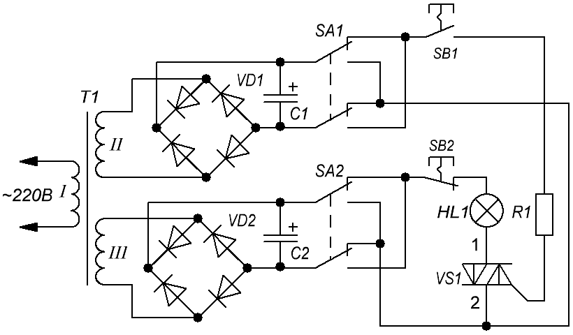

Проверка исправности симистора
Проверка стрелочным омметром:
Выполнить тестирование симистора мультиметром не удастся, потому что не хватит тока для открытия Поэтому нужно использовать стрелочный омметр или. Его силы тока будет достаточно для срабатывания.
Алгоритм проверки симистора стрелочнымй омметром:
- Подключаем щупы прибора к выводам T1 и T2 (A1 и A2).
- Устанавливаем кратность на омметре "×1".
- Проводим измерение, положительным результатом будет бесконечное сопротивление, в противном случае деталь «пробита».
- Кратковременно соединяем выводы T2 и G (управляющий). Сопротивление должно упасть примерно до 20-80 Ом.
- Меняем полярность и повторяем тест с пункта 3 по 4.
Проверяемый деталь не обязательно демонтировать, достаточно только отключить управляющий вывод.
В данным способом не всегда удается достоверно проверку, за исключением тестирования на «пробой», поэтому лучше собрать прибор для тестирования симисторов (рис. 1).

Таблица 1
| Обозначение | Наименование | Номинал | Кол-во | Примечание |
|---|---|---|---|---|
| С1, C2 | Конденсатор электролитический | 1000 мкФ - 16 В |
1 | |
| HL1 | Лампа накаливания | 12 В, 0,5А | 1 | |
| R1 | Резистор постоянный | 51 Ом | 1 | |
| Т1 | Трансформатор | 12 В | 1 | с двумя независимыми вторичными обмотками |
| VD1, VD2 | Диодная мост | КЦ405 | 2 | диодный мост из диодов 1N4007 |
Алгоритм проверки:
- Устанавливаем переключатели в отжатое положение (соответствующее схеме).
- Нажимаем кнопку SB1: лампочка светится - симистор открылся.
- Нажимаем кнопку SB2: лампа гаснет - симистор закрылся.
- Нажимаем на кнопку переключателя SA1 и нажимаем кнопку SB1: лампа снова должна зажечься.
- Производим переключение SA2, нажимаем кнопку SB1, затем снова меняем положение SA2 и повторно жмем SB1. Индикатор включится, когда на затвор попадет минус.